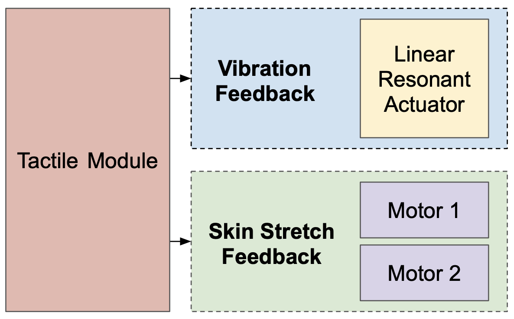

The tactile module comprises two complimentary subsystems: vibration feedback and skin-stretch feedback.  In developing the tactile feedback module, we encountered competing constraints: the module should be as small and lightweight as possible, so as not to restrict or encumber finger movement; it should also, however, contain as many degrees of freedom as possible, so as to maximize the space of reproducible tactile sensations. It was natural that we find these two features at odds — most haptics engineers do. Luckily, many in academia have interested themselves in developing devices that artificially provoke tactile sensations, so we were able to draw from a vast and deep body of literature when designing our own device. After much consideration, we deduced that a vibration motor acting in conjunction with a 2-DOF skin-stretch manipulator would be capable of recreating a wide array of tactile experiences while still fitting in a sufficiently convenient form factor.
Skin Stretch Feedback
Our skin-stretch unit has two degrees of freedom. It can press into the fingerpad, simulating a contact force, and it can shear the fingerpad, simulating tangential forces. Shown below is a simplified model for the skin-stretch element of our tactile feedback module.Vibration Feedback
Implementing vibration feedback is incredibly simple from a mechanical standpoint. In fact, I even feel comfortable revealing the secret behind our method of providing vibration feedback: we take a vibration motor, and — wait for it — put it in contact with the user's fingertip. The real complexity in implementations of vibration feedback come from the control system, which is tasked with faithfully replicating the vibrotactile profiles of physical materials. Consider the materials shown below.Our long term goal is to follow in their footsteps and produce a database of texture models that can be accessed by anyone programming an application for our glove. All a programmer would have to do is define the material of a given object, and the tactile feedback module would automatically replicate its vibration profile. The whole predictive linear coding step might be unnecessary for us, but the idea of representing materials by their frequency domain spectrum is a compelling idea, and one that we believe will underpin the implementation of realistic haptics in the future.